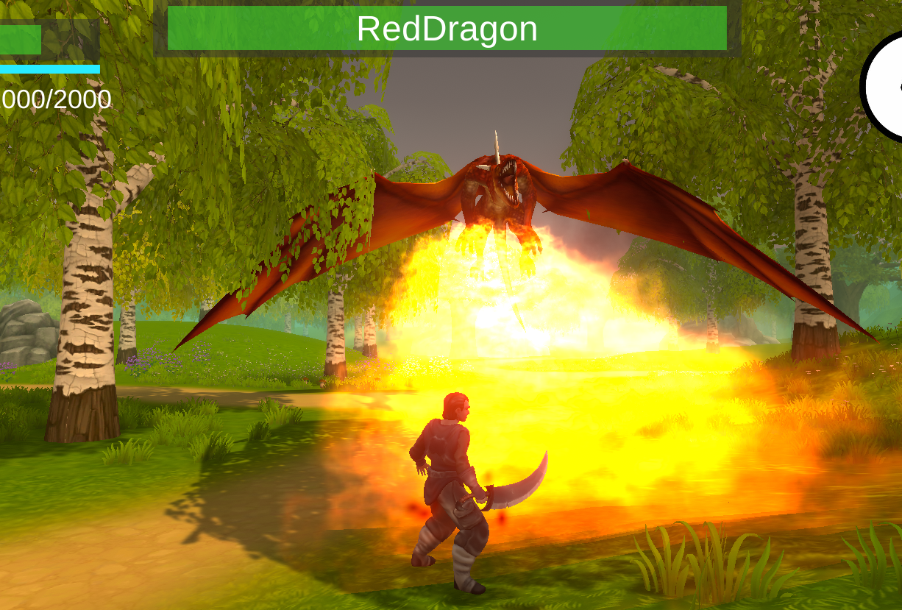
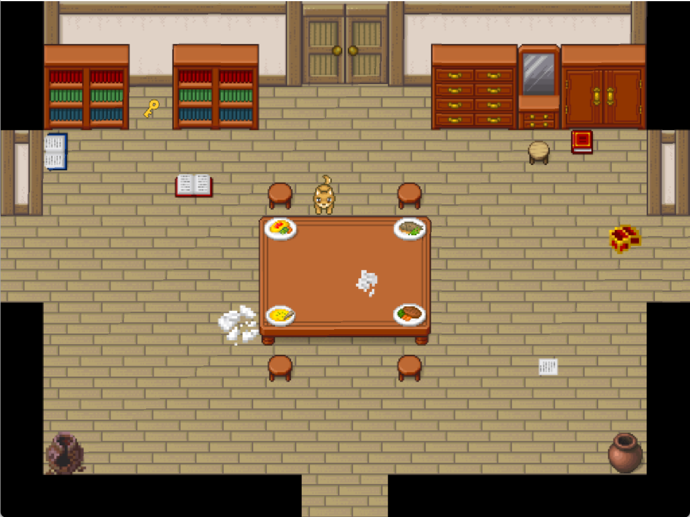
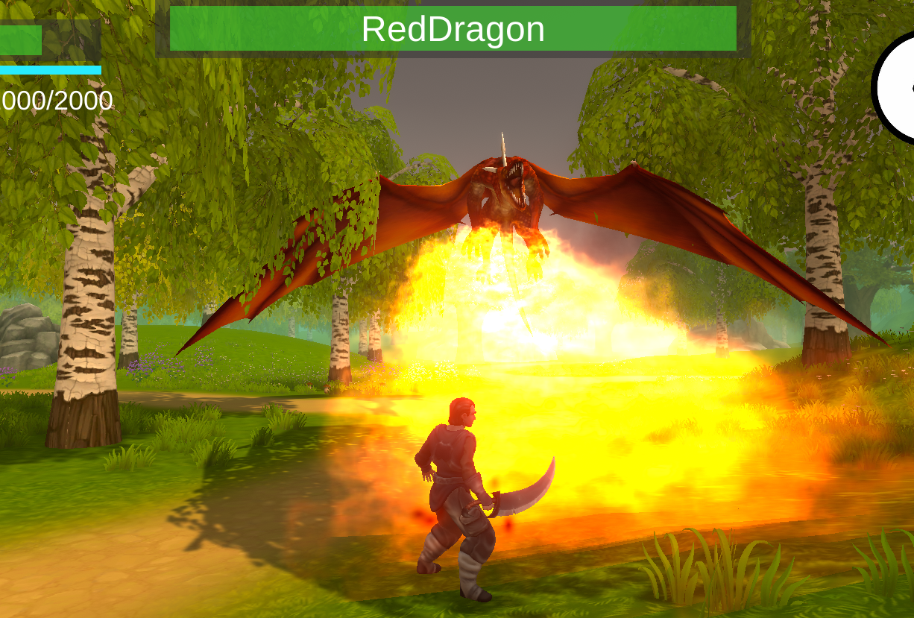
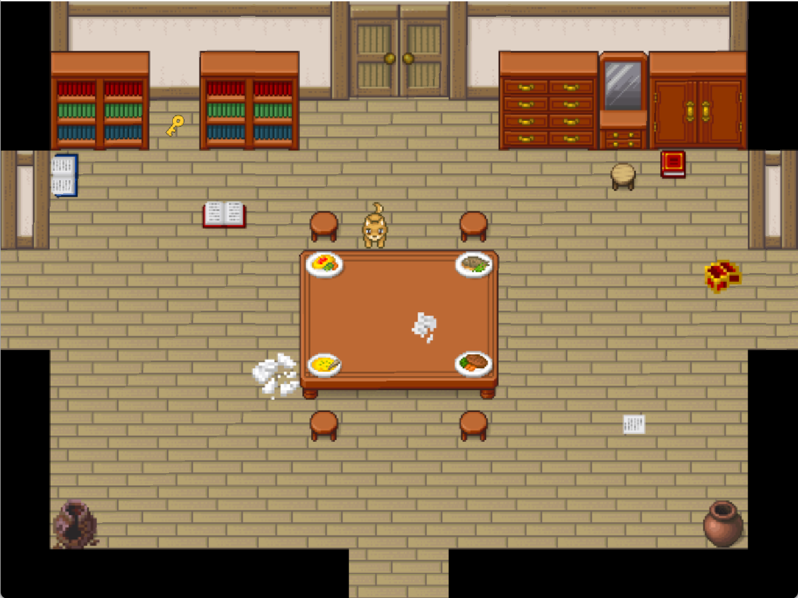
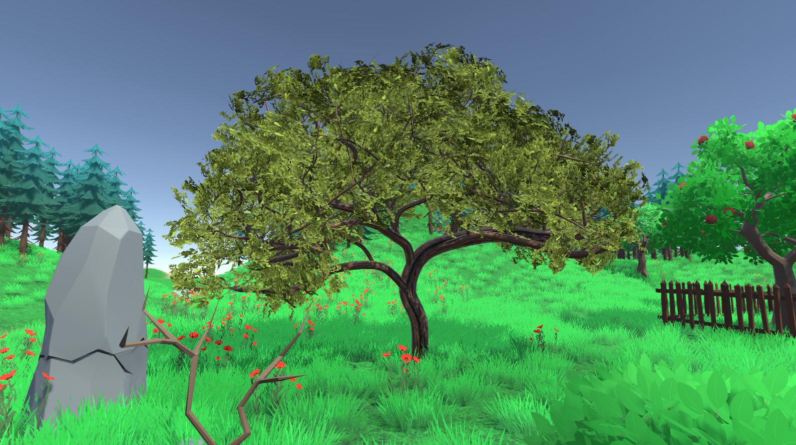
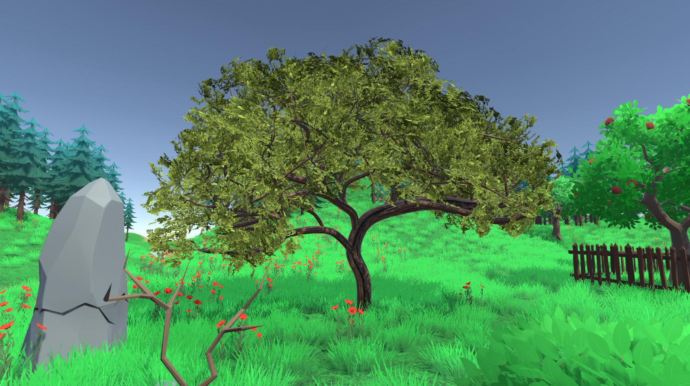

ネットワーク、ゲーム、Web。多分野で動くものを設計し、形にしてきました。
UnityやJavaを用い、ホラーやRPG、AIボードなど幅広いジャンルのゲームを開発。技術面での探究と試行を重ね、完成度を磨きました。
Docker、ns-3、Cloudflare quicheなどを組み合わせた通信再現環境を作成。LDDoS攻撃に対する輻輳制御の挙動を可視化しました。
Swiftでランニングアプリを開発し、Arduinoで人工の指を制作。さらにBlenderで3Dモデルを制作するなど、多分野に取り組みました。
ネットワークシミュレーション（ns-3, QUIC）, システム設計, Unityを使ったゲーム開発。 研究・開発・表現の3軸で、動作原理を理解しながら「再現性のある技術」を形にします。
 



 
